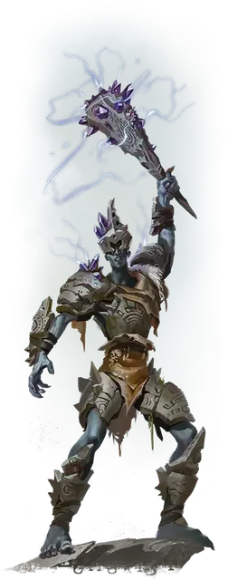

Каменный великан Злой земли
Stone Giant of Evil Earth
Огромный Великан, обычно нейтрально-злой

Класс Доспеха 20 (латы)
Хиты 137 (11к12 + 66)
Скорость 40 футов
| мод | спас | ||
|---|---|---|---|
| СИЛ | 23 | +6 | +10 |
| ЛОВ | 13 | +1 | +1 |
| ТЕЛ | 22 | +6 | +10 |
| мод | спас | ||
|---|---|---|---|
| ИНТ | 10 | +0 | +0 |
| МДР | 12 | +1 | +1 |
| ХАР | 9 | −1 | −1 |
Навыки Атлетика +14, Восприятие +5
Чувства тёмное зрение 60 футов, пассивное Восприятие 15
Языки Общий, Великаний, Терран
Опасность 9 (5000 опыта)
Бонус мастерства +4
Действия
Мультиатака. Великан совершает две атаки Громовой каменной дубиной или Валуном в любой комбинации.
Громовая каменная дубина. . Рукопашная атака оружием: +10 к попаданию, досягаемость 15 футов, одна цель. Попадание: 16 (3к6 + 6) дробящего урона. Великан может заставить дубинку испустить взрыв громовой энергии, который наносит 10 (3к6) урона звуком каждому существу, кроме великана, находящемуся в пределах 30 футов от цели. Дубина может взорваться таким образом только один раз за ход.
Валун. Дальнобойная атака оружием: +10 к попаданию, дистанция 60/240 футов, одна цель. Попадание: 19 (3к8 + 6) дробящего урона, и цель должна преуспеть в спасброске Силы Сл 18, иначе будет сбита с ног. После того, как великан бросит валун, совершите бросок к6; при результате "3" или ниже у великана больше не остаётся валунов для броска.
Реакции
Непоколебимый. Если великан проваливает спасбросок против эффекта, который переместит его или собьёт его с ног, или того и другого вместе, он вместо этого преуспевает в спасброске.
Описание
Каменные великаны, склонные к жестокости и разрушению, могли бы отвергнуть богов Уложения и обратиться к поклонению Огремоху [ogremoch], принцу Злой земли. Эти великаны рассматривают поверхностный мир не как царство грез, а как кошмар, достойный только разрушения, поэтому они отдают свою силу культам, которые планируют превратить мир в руины.
Облаченные в тяжелые доспехи, созданные так, чтобы походить на покровителя культа, каменные великаны Злой земли владеют оружием, излучающим грозовую энергию. Эти великаны служат опорой культа, используя свою мощь, чтобы уничтожить поверхностный мир во имя Огремоха.